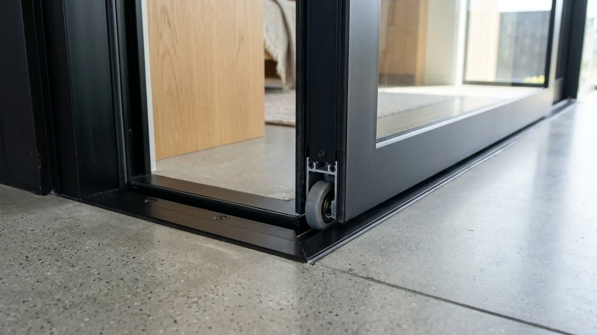

Tips Memilih Pintu Sliding Aluminium Hemat Ruang untuk Kos-Kosan di Sukun

📌 Ringkasan Inti
Pintu sliding aluminium menjadi pilihan tepat untuk kos-kosan di Sukun karena tidak membutuhkan ruang ayun seperti pintu engsel biasa. Pintu ini cocok untuk kamar kos berukuran terbatas yang banyak dicari mahasiswa dan pekerja di kawasan tersebut.
- Pintu sliding aluminium menghemat ruang karena bergerak menyamping, bukan berayun ke dalam kamar.
- Pengukuran bukaan pintu perlu dilakukan presisi agar rel geser berfungsi lancar.
- Pilihan ketebalan profil aluminium memengaruhi kekuatan dan daya tahan pintu.
- Perawatan rel geser secara berkala membantu mencegah pintu macet.
- Harga pintu sliding aluminium dapat bervariasi tergantung ukuran dan jenis kaca yang dipakai.
Mencari sliding door aluminium murah sukun menjadi kebutuhan utama para pemilik properti sewa dan pengelola kos-kosan di kawasan Sukun Kota Malang. Dengan memanfaatkan pintu sliding aluminium kos Sukun yang hemat ruang, kamar berukuran compact tetap terasa lega, fungsional, dan bernilai sewa tinggi.
Pintu sliding aluminium menjadi pilihan tepat untuk kos-kosan di Sukun karena tidak membutuhkan ruang ayun seperti pintu engsel biasa. Pintu ini cocok untuk kamar kos berukuran terbatas yang banyak dicari mahasiswa kampus sekitarnya dan pekerja muda di Malang.
Apa Itu Pintu Sliding Aluminium untuk Kos-Kosan
Pintu sliding aluminium adalah pintu geser berbahan rangka aluminium yang bergerak menyamping mengikuti rel, tanpa memerlukan ruang ayun seperti pintu engsel konvensional. Model ini banyak dipakai untuk kamar kos di Sukun karena ukuran kamar yang umumnya terbatas dan membutuhkan efisiensi sirkulasi maksimal.
Dengan sistem geser, penghuni kos dapat menempatkan lemari baju, rak buku, atau meja belajar lebih dekat ke area pintu tanpa khawatir terhalang oleh bukaan daun pintu. Bahan aluminium juga membuat pintu ini relatif ringan digeser namun tetap kokoh dan tahan banting untuk pemakaian jangka panjang setiap hari.
Kenapa Pintu Sliding Aluminium Cocok untuk Kos-Kosan
Pintu sliding aluminium cocok untuk kos-kosan karena menghemat ruang gerak, mudah dirawat, dan tahan terhadap kelembapan dibanding pintu kayu. Faktor ini penting mengingat kamar kos di Sukun umumnya berukuran kecil hingga sedang dan banyak melayani mahasiswa maupun pekerja aktif.
Selain hemat ruang, pintu sliding aluminium juga lebih tahan terhadap cuaca lembap Malang dibanding material kayu yang rentan memuai, melengkung, atau lapuk dimakan rayap. Perawatan pintu aluminium pun relatif sangat sederhana karena tidak memerlukan plitur atau pengecatan ulang berkala.
Bagi pemilik kos yang membangun atau merenovasi banyak kamar sekaligus di Sukun, pintu sliding aluminium juga membantu mempercepat proses pemasangan karena desainnya yang cenderung presisi, seragam, dan mudah direplikasi pada setiap lantai bangunan.

Cara Mengukur Bukaan Pintu Geser yang Presisi
Pengukuran bukaan pintu geser yang presisi dimulai dari mengukur lebar dan tinggi bukaan dinding plesteran, kemudian menambahkan ruang gerak untuk rel dan bingkai kusen aluminium. Kesalahan pengukuran dapat membuat daun pintu sulit digeser atau menyisakan celah udara yang mengurangi privasi kamar.
Berikut langkah-langkah praktis pengukuran di lapangan:
- Ukur Lebar Bukaan: Ukur lebar bukaan dinding dari sisi kiri ke kanan pada tiga titik berbeda (atas, tengah, dan bawah) karena plesteran dinding lama terkadang tidak rata. Ambil angka terkecil sebagai acuan agar kusen muat terpasang sempurna.
- Ukur Ketinggian Bukaan: Ukur tinggi bukaan dari keramik lantai hingga bagian balok atas kusen pada beberapa titik untuk memastikan kerataan elevasi lantai.
- Tentukan Arah Geser: Tentukan orientasi geser pintu (ke kiri atau ke kanan) dengan mempertimbangkan penataan perabot kasur dan meja belajar di dalam kamar kos.
- Sediakan Ruang Dinding Samping: Sisakan ruang dinding kosong di samping bukaan minimal selebar daun pintu sebagai jalur lintasan daun pintu saat dibuka penuh.
- Catat dan Konsultasikan: Catat seluruh ukuran terinci dan serahkan ke aplikator kusen aluminium di Sukun agar proses fabrikasi rel dan profil presisi sesuai kondisi riil.
Paket Pintu Sliding Aluminium Hemat Ruang Kos Sukun
Solusi renovasi pintu kamar kos, pintu akses balkon, dan kamar mandi kos di kawasan Sukun Malang dengan sliding door aluminium berkualitas tinggi, awet, dan bergaransi resmi.
Tips Memilih Pintu Sliding Aluminium Hemat Ruang
Tips utama memilih pintu sliding aluminium adalah memperhatikan ketebalan profil, kualitas rel geser, dan jenis kaca yang digunakan agar pintu tetap awet meski dipakai berulang kali oleh penghuni kos. Profil aluminium yang terlalu tipis berisiko melengkung pada penggunaan jangka panjang.
Pilih rel geser dengan bantalan roda berbahan nylon bearing atau stainless steel yang halus agar pintu tidak berisik saat digeser di malam hari, mengingat kos-kosan dihuni banyak orang. Kaca buram (frosted) atau kaca es juga bisa menjadi pilihan tepat untuk menjaga privasi penghuni tanpa menghalangi pasokan cahaya alami masuk ke kamar.
Untuk kos-kosan dengan anggaran terbatas di Sukun, pemilik dapat memilih ukuran pintu standar yang seragam di seluruh kamar agar biaya pengadaan bahan dan fabrikasi di workshop menjadi lebih efisien dibanding membuat ukuran kustom yang berbeda-beda di tiap pintu.
"Pemilihan roda bearing stainless dan rel aluminium berprofil presisi adalah faktor terpenting pada pintu sliding kamar kos. Karena frekuensi buka-tutup harian yang tinggi oleh penghuni kos, hardware berkualitas mencegah risiko anjlok dan menjamin pergeseran pintu tetap mulus tanpa bunyi berderit."
Kesalahan Umum Saat Memasang Pintu Sliding Aluminium
Kesalahan umum yang sering terjadi adalah tidak menyisakan ruang cukup di samping bukaan untuk jalur geser pintu, sehingga daun pintu tidak dapat terbuka secara maksimal. Kesalahan lain adalah memilih roda geser murahan berbahan plastik biasa tanpa bearing pelindung yang mudah pecah akibat beban pintu kaca.
Pemasangan rel kusen yang tidak menggunakan waterpass presisi juga sering menyebabkan pintu meluncur sendiri saat dimiringkan atau terasa sangat berat saat digeser. Oleh sebab itu, pemasangan oleh aplikator berpengalaman menjadi kunci keamanan operasional pintu kos.
Kesimpulan Praktis Pintu Geser Sukun
Pintu sliding aluminium menjadi solusi hemat ruang yang sangat tepat untuk kos-kosan di Sukun, asalkan pengukuran bukaan dilakukan secara presisi dan komponen rel geser dipilih dengan kualitas yang kokoh. Pertimbangkan ketebalan profil 1.1mm hingga 1.35mm serta jenis kaca yang tepat agar pintu kos tetap awet dan bebas keluhan penghuni dalam jangka panjang.
Pertanyaan Seputar Pintu Sliding Kos Sukun
Ya, karena pintu sliding bergerak menyamping mengikuti rel, sehingga tidak memerlukan ruang ayun (swing) seperti pintu engsel konvensional.
Harga dapat bervariasi tergantung ukuran bukaan, ketebalan profil (1.1mm vs 1.35mm), dan jenis kaca yang dipilih, sehingga sebaiknya dikonsultasikan langsung untuk estimasi RAB akurat di Sukun Malang.
Sangat cocok, karena sistem geser tidak memakan ruang lantai maupun ruang gerak di dalam kamar seperti pintu ayun pada umumnya.